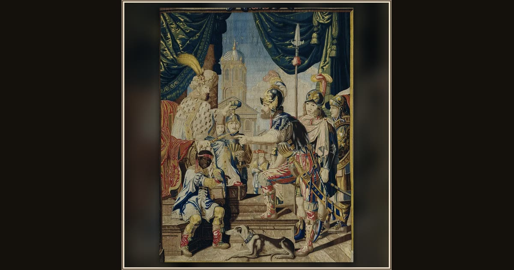

Orestes' wraak op Aegisthus (De geschiedenis van Iphigenia en Orestes)
Pieter de Cracht, Schoonhoven · c. 1648 - c. 1662 · rijksmuseum
An armoured Orestes points at Aegisthus, seated on his throne, who is to be killed in revenge for Agamemnon's murder, as Orestes drives him into the house to die (1501). Explore its place in Sophocles's Plays, Electra, line 1475.